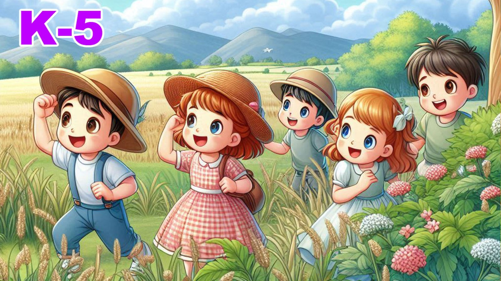

IGNITION

USO DE JUEGOS:
(UNICAMENTE PARA SISTEMA OPERATIVO WINDOWS)
Para poder usar los juegos, es necesario establecer el Navegador Google portable, como navegador predeterminado.
En el paquete se provee la carpeta que contiene la version portable de Google.
Para Establecerlo como predeterminado:
PARA TODAS LAS DEMAS FUNCIONES, AUDIO, VIDEO Y SPELLING BEE SE RECOMIENDA GOOGLE CHROME
EN SU VERSION ORIGINAL.
PARA USAR LA PLATAFORMA CON GOOGLE CHROME ORIGINAL:
1. ESTABLECER NUEVAMENTE COMO PREDETERMINADO Ó
2. TAMBIEN SE PUEDE ABRIR CON CLICK-DERECHO Opcion "Abrir con",
(elegir Google Chrome).
(UNICAMENTE PARA SISTEMA OPERATIVO WINDOWS)
Para poder usar los juegos, es necesario establecer el Navegador Google portable, como navegador predeterminado.
En el paquete se provee la carpeta que contiene la version portable de Google.
Para Establecerlo como predeterminado:
- Ir a configuracion de Windows
- Buscar Aplicaciones predeterminadas
- Pulsar en el Navegador que ya esta elegido.
- Elegir Google-portable
(el cual es una version distinta de la version original de Google Chrome)
- Dar Click en el boton "JUEGOS" que se ve abajo de esta nota.
- Buscar la carpeta del Kinder que se estudiará, entrar a ella.
- Los archivos ejecutables de cada carpeta son :
KINDER_4_JUEGOS,
KINDER_5_JUEGOS y
KINDER_6_JUEGOS respectivamente - Buscar el archivo ejecutable del Kinder correspondiente, Dar Click-Derecho
- "Abrir" en el menu contextual
- NOTA: Tambien es posible abrir los juegos examinando la carpeta de JUEGOS
directamente en el Explorador de Windows, buscar el archivo ejecutable respectivo y
Doble-Click a ese archivo.
PARA TODAS LAS DEMAS FUNCIONES, AUDIO, VIDEO Y SPELLING BEE SE RECOMIENDA GOOGLE CHROME
EN SU VERSION ORIGINAL.
PARA USAR LA PLATAFORMA CON GOOGLE CHROME ORIGINAL:
1. ESTABLECER NUEVAMENTE COMO PREDETERMINADO Ó
2. TAMBIEN SE PUEDE ABRIR CON CLICK-DERECHO Opcion "Abrir con",
(elegir Google Chrome).